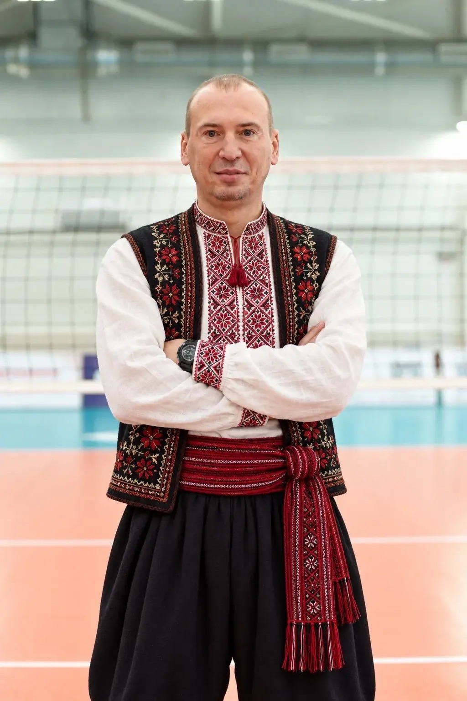
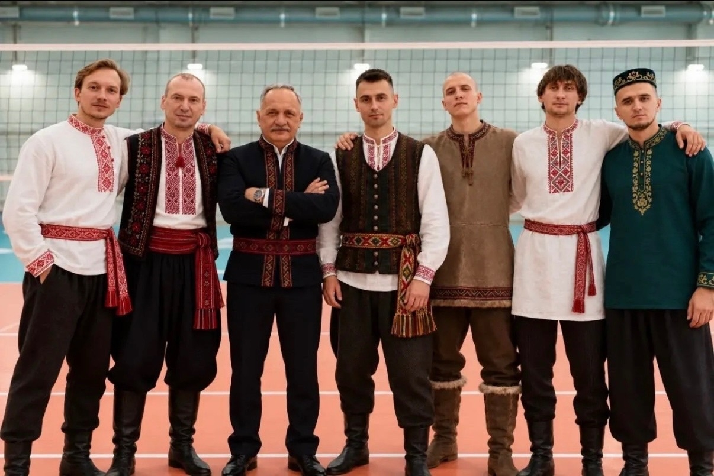
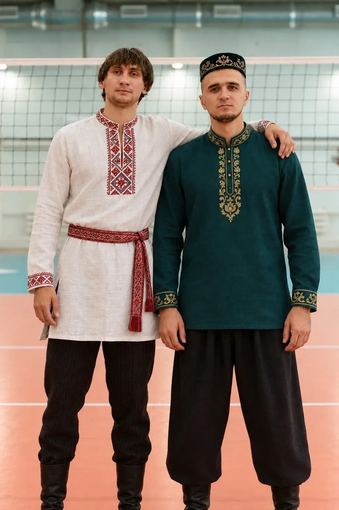
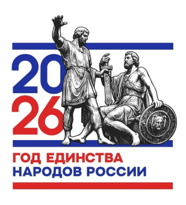
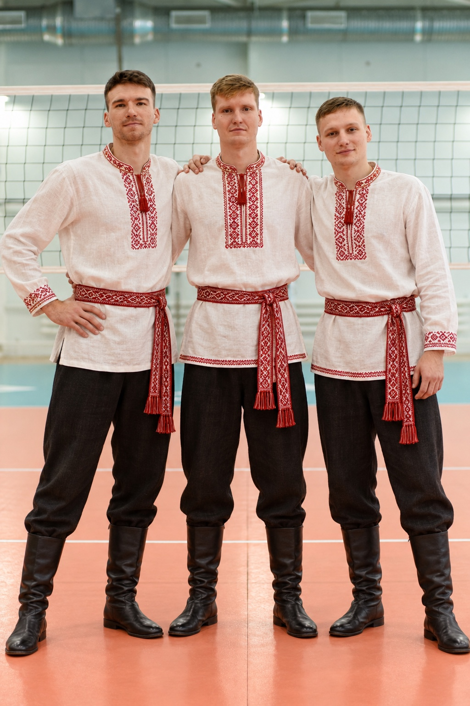

Старший тренер команды
Сергей Шульга
Представитель восточнославянского народа — украинец.

Семь портретов о людях, культурах и общей любви к волейболу. История команды ВК «Тюмень» — в фотографиях.
Познакомиться с командой
В команде ВК «Тюмень» встречаются разные культуры и традиции. Каждый приносит свою историю, а объединяют всех волейбол, доверие и общая цель.
Эта фотовыставка — взгляд на многогранность команды и на то, как разные корни становятся частью одного целого.
Листайте участников по одному или выберите портрет в архиве.

Представитель восточнославянского народа — украинец.

Общие кадры команды ВК «Тюмень».
